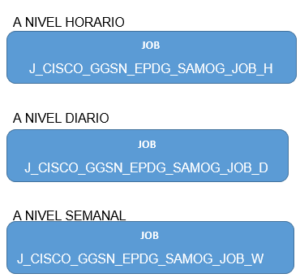
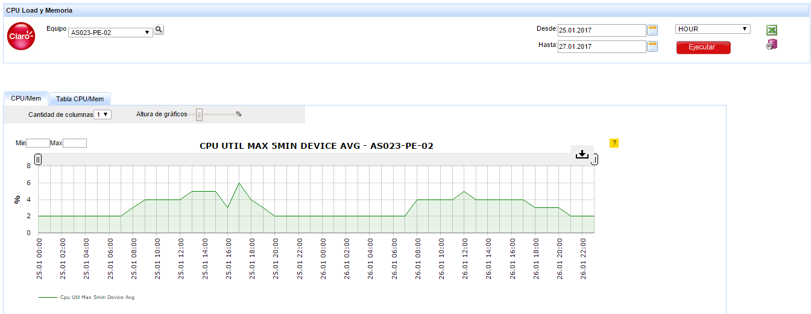
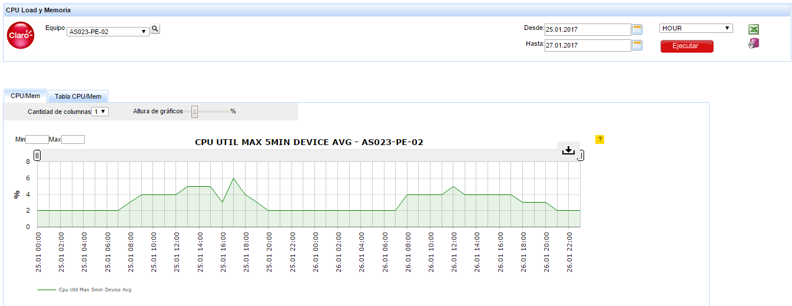

CISCO PRIME¶
1. OBJETIVO¶
El presente documento buscar explicar y detallar el proceso que genera Cisco Prime.
2. ALCANCE¶
Áreas involucradas: Performance de Red
3. DEFINICIONES¶
- Cortado: Servidor UNIX en donde se importan los XML desde el proveedor, y en donde se encuentra Smart. El nombre es cortado.claro.amx y la dirección ip física es 10.105.146.8.
4. DESCRIPCION GENERAL¶
La plataforma Cisco Prime Performance es el sistema de gestión propietario del proveedor Cisco para todos sus routers y switches. En Claro se utiliza para monitorear los KPIs del Backbone IP. La integración a Smart de esta plataforma consiste en recolectar los archivos CSV y XML de Cisco Prime Performance, y mostrarles en Smart. Los KPIs son básicamente: Utilización de CPU y Memoria de los equipos, y la Utilización de Interfaces. La información puede visualizarse en Smart hora x hora, por hora pico del día, por hora pico de la semana, por hora pico del mes, por día, por semana, por mes.
Documento de Requerimiento: Cisco_Prime_Integracion
5. MACRO FLUJO DEL PROCESO¶
6. DESCRIPCIÓN DETALLADA¶
6.1. Datos Origen¶
Server Origen y Path: 10.92.50.223 , /opt/CSCOppm-gw/reports/exporthourly/
Cantidad de archivos origen: 3 archivos
- INTERFACE.YYYY-MM-DD-HH.CSV
- INTERFACE_ERRORS.YYYY-MM-DD-HH.CSV
- INTERFACE_AVAIL.YYYY-MM-DD-HH.CSV
- CPU_DEVICE_AVG.YYYY-MM-DD-HH.CSV
- MEMORY_DEVICE_AVERAGE.YYYY-MM-DD-HH.CSV
Frecuencia actualización: Frecuencia diaria
Tipo de Archivo: CSV
6.2. Datos Destino¶
- Server Destino: Cortado
- Conversión de Archivos: No
- Tabla Files: Si
- Tabla Auxiliar: No
- Frecuencia de corrida del proceso: 1 vez al día
- Regionales: No
- RAW Si/No: No
- Hour Si/No: Si
- Day Si/No: Si
- BH Si/No: Si
- IBHW Si/No: Si
- Países: No
- Directorio Destino (File System): /calidad/CiscoPrime
6.3. Shell Copiar Archivos Origen a Destino y limpieza de los mismos¶
Los Scripts tienen las siguientes funciones:
1- Copiar los archivos
2- Ejecutar Pentaho
- El Script ciscoPrimeDiario es la raíz de proceso
6.4. Listado de Tablas Utilizadas¶
Las tablas utilizadas son las siguientes:
Los campos de las tablas utilizadas son las siguientes:
- Tabla Files

- Tabla CSCO_CGN_STATS_BH

- Tabla CSCO_CGN_STATS_DAY
- Tabla CSCO_CGN_STATS_HOUR
- Tabla CSCO_CGN_STATS_IBHW
- Tabla CSCO_CPU_DEVICE_AVG_HOUR
- Tabla CSCO_MEM_DEVICE_AVG_BH

- Tabla CSCO_MEM_DEVICE_AVG_DAY
- Tabla CSCO_MEM_DEVICE_AVG_HOUR

- Tabla CSCO_MEM_DEVICE_AVG_IBHW
- Tabla CSCO_INTERFACE_AVAIL_HOUR

- Tabla CSCO INTERFACE_BH

- Tabla CSCO INTERFACE_DAY

- Tabla CSCO INTERFACE_ERRORS_HOUR
- Tabla CSCO INTERFACE_HOUR
- Tabla CSCO INTERFACE_HOUR_OLD2

- Tabla CSCO INTERFACE_IBHW

- Tabla CSCO_LINKS
- Tabla CSCO_MEMORY_BH

- Tabla CSCO_MEMORY_DAY

- Tabla CSCO_MEMORY_DEVICE_AVG_HOUR
- Tabla CSCO_MEMORY_HOUR

- Tabla CSCO_MEMORY_IBHW
- Tabla ERROR_LOG_NEW

- Tabla PROCESS_TO_RUN

6.5. Pentaho¶

- Proceso Pentaho End to End
- Pentaho Inventory End To End
- Pentaho Links End To End
- Pentaho Cgn Stats End To End
- Pentaho Interface End To End

- Pentaho Interface Avail End To End
- Pentaho Interface Errors End To End

- Pentaho Cpu Device Avg End To End
- Pentaho Memory Device Avg End To End
- Pentaho Cpu Mem Device Avg End To End
7. REPROCESO MANUAL¶
Pendiente
 
